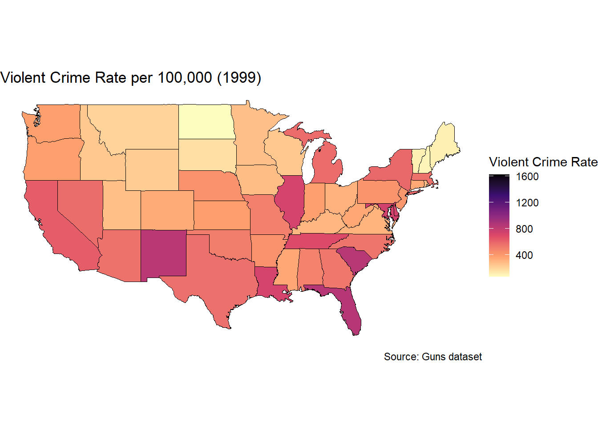
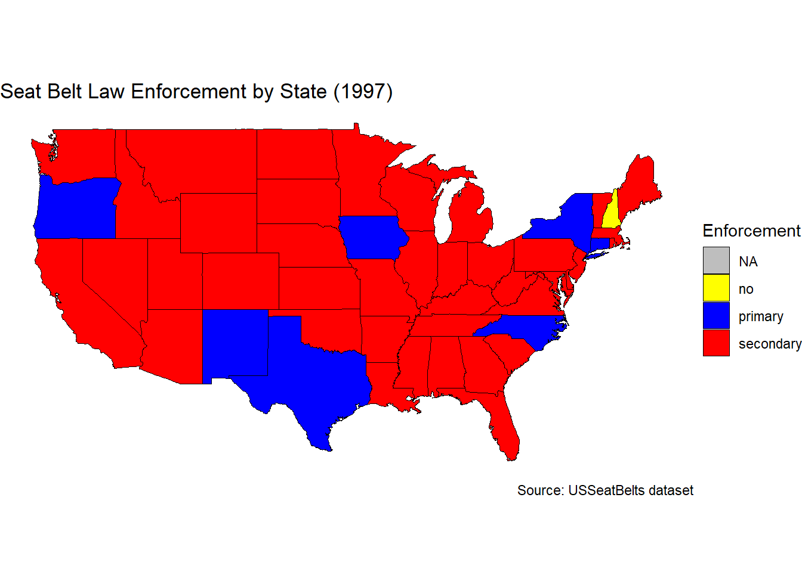

What regions of the U.S. had the highest violent crime rates in 1999?
This choropleth map uses color gradients to compare crime rates across all 48 continental states, offering a clear regional overview.
# Load necessary librarieslibrary(tidyverse)library(maps)library(ggplot2)library(stringr)library(readr)# ----------- Violent Crime Rate Map (1999) -----------# Load and filter Guns dataset for 1999Guns_1999 <-read_csv("Guns.csv") |>filter(year ==1999) |>mutate(state =str_to_lower(str_squish(state))) # Standardize state names for merging# Load US state boundary data from the maps packagestates_polygon <-map_data("state") |>as_tibble() |>rename(State = region) # Ensure naming consistency for merging# Check for any unmatched states before merging (Excluding Alaska and Hawaii)anti_join(Guns_1999, states_polygon, by =c("state"="State"))
# A tibble: 2 × 14
rownames year violent murder robbery prisoners afam cauc male population
<dbl> <dbl> <dbl> <dbl> <dbl> <dbl> <dbl> <dbl> <dbl> <dbl>
1 46 1999 632. 8.6 91.4 413 8.99 60.6 16.6 0.620
2 276 1999 235 3.7 88.1 307 24.2 26.1 13.7 1.19
# ℹ 4 more variables: income <dbl>, density <dbl>, state <chr>, law <chr>
Hide Code
# Merge violent crime data with state boundariesdata_static <- states_polygon |>left_join(Guns_1999, by =c("State"="state"))# Generate static choropleth map for violent crime rateggplot(data_static, aes(x = long, y = lat, group = group, fill = violent)) +geom_polygon(color ="black", linewidth =0.2) +scale_fill_viridis_c(option ="magma", name ="Violent Crime Rate", direction =-1) +coord_map() +theme_void() +labs(title ="Violent Crime Rate per 100,000 (1999)",caption ="Source: Guns dataset")

Alt-text:
This choropleth map displays the violent crime rate per 100,000 population across U.S. states in 1999. The x-axis represents longitude, and the y-axis represents latitude, outlining the U.S. state boundaries, while the color scale represents crime rates, ranging from light yellow (0-400 per 100,000) to dark purple (1,600+ per 100,000). The highest violent crime rates (dark purple) are concentrated in southern states like South Carolina, Florida and Louisiana, as well as parts of the Southwest like New Mexico. In contrast, the lowest crime rates (light yellow) appear in northern and midwestern states, including North Dakota, Maine, and Vermont. Most states exhibit moderate crime rates (orange to red), with a regional pattern suggesting that violent crime was generally higher in the South and Southwest and lower in the North. This visualization helps compare crime rates geographically, revealing clear regional differences.
Seat Belt Law Enforcement Static Map (1997)
How were seat belt laws enforced across states in 1997? This map highlights state-level differences in law enforcement types and identifies outliers like New Hampshire.
# ----------- Seat Belt Law Enforcement Map (1997) -----------# Load and filter seat belt law enforcement data for 1997USSeatBelts_1997 <-read_csv("USSeatBelts.csv") |>filter(year ==1997) |>mutate(state = state.name[match(state, state.abb)], # Convert state abbreviations to full namesstate =str_to_lower(str_squish(state))) |># Standardize state names for mergingdrop_na(state) # Ensure all state names are valid before merging# Load US state boundary datastates_polygon <-map_data("state") |>as_tibble() |>rename(State = region)# Check for any unmatched states before merging (Excluding Alaska and Hawaii)anti_join(USSeatBelts_1997, states_polygon, by =c("state"="State"))
# A tibble: 2 × 13
rownames state year miles fatalities seatbelt speed65 speed70 drinkage
<dbl> <chr> <dbl> <dbl> <dbl> <dbl> <chr> <chr> <chr>
1 15 alaska 1997 4387 0.0176 0.690 yes no yes
2 180 hawaii 1997 7947 0.0165 0.800 no no yes
# ℹ 4 more variables: alcohol <chr>, income <dbl>, age <dbl>, enforce <chr>
Hide Code
# Merge seat belt law enforcement data with state boundariesdata_static <- states_polygon |>left_join(USSeatBelts_1997, by =c("State"="state")) |>mutate(enforce =replace_na(enforce, "NA")) # Explicitly label missing enforcement data# Define categorical color mapping for seat belt lawsenforce_colors <-c("no"="yellow", "primary"="blue", "secondary"="red", "NA"="gray") # Custom color scheme# Generate static choropleth map for seat belt law enforcementggplot(data_static, aes(x = long, y = lat, group = group, fill = enforce)) +geom_polygon(color ="black", linewidth =0.2) +scale_fill_manual(values = enforce_colors, name ="Enforcement", na.value ="gray") +coord_map() +theme_void() +labs(title ="Seat Belt Law Enforcement by State (1997)",caption ="Source: USSeatBelts dataset")

Alt-text:
This choropleth map displays seat belt law enforcement classifications across U.S. states in 1997. The x-axis represents longitude, and the y-axis represents latitude, defining U.S. state boundaries, while the color scale represents the type of seat belt law enforcement. The categories include yellow for “no enforcement”, blue for “primary enforcement”, red for “secondary enforcement”, and gray for missing data (NA). Most states are red, indicating secondary enforcement, while primary enforcement (blue) is concentrated in a few states, such as Oregon, New Mexico, Texas, and New York. Surprisingly, New Hampshire is the only state with no enforcement (yellow) in this year. The geographic distribution suggests that in 1997, secondary enforcement was the dominant policy, with primary enforcement laws less common and regionally scattered. This map helps visualize the state-level differences in seat belt law enforcement during that year.
Source Code
---format: html: theme: cosmo toc: true toc-location: right page-layout: full css: styles.csseditor_options: chunk_output_type: console---<div style="text-align: left;"># Mini Project 1 Static Maps#### Author: Tenzin Gyaltsen## Violent Crime Rate Static Map (1999)What regions of the U.S. had the highest violent crime rates in 1999? This choropleth map uses color gradients to compare crime rates across all 48 continental states, offering a clear regional overview.- 📘 **Source title**: [More Guns, Less Crime?](https://vincentarelbundock.github.io/Rdatasets/datasets.html)- 🔎 **About this dataset**: [AER::Guns documentation](https://vincentarelbundock.github.io/Rdatasets/doc/AER/Guns.html)```{r}#| echo: true#| message: false#| warning: false# Load necessary librarieslibrary(tidyverse)library(maps)library(ggplot2)library(stringr)library(readr)# ----------- Violent Crime Rate Map (1999) -----------# Load and filter Guns dataset for 1999Guns_1999 <-read_csv("Guns.csv") |>filter(year ==1999) |>mutate(state =str_to_lower(str_squish(state))) # Standardize state names for merging# Load US state boundary data from the maps packagestates_polygon <-map_data("state") |>as_tibble() |>rename(State = region) # Ensure naming consistency for merging# Check for any unmatched states before merging (Excluding Alaska and Hawaii)anti_join(Guns_1999, states_polygon, by =c("state"="State")) # Merge violent crime data with state boundariesdata_static <- states_polygon |>left_join(Guns_1999, by =c("State"="state"))# Generate static choropleth map for violent crime rateggplot(data_static, aes(x = long, y = lat, group = group, fill = violent)) +geom_polygon(color ="black", linewidth =0.2) +scale_fill_viridis_c(option ="magma", name ="Violent Crime Rate", direction =-1) +coord_map() +theme_void() +labs(title ="Violent Crime Rate per 100,000 (1999)",caption ="Source: Guns dataset")```#### Alt-text: This choropleth map displays the violent crime rate per 100,000 population across U.S. states in 1999. The x-axis represents longitude, and the y-axis represents latitude, outlining the U.S. state boundaries, while the color scale represents crime rates, ranging from light yellow (0-400 per 100,000) to dark purple (1,600+ per 100,000). The highest violent crime rates (dark purple) are concentrated in southern states like South Carolina, Florida and Louisiana, as well as parts of the Southwest like New Mexico. In contrast, the lowest crime rates (light yellow) appear in northern and midwestern states, including North Dakota, Maine, and Vermont. Most states exhibit moderate crime rates (orange to red), with a regional pattern suggesting that violent crime was generally higher in the South and Southwest and lower in the North. This visualization helps compare crime rates geographically, revealing clear regional differences.## Seat Belt Law Enforcement Static Map (1997)How were seat belt laws enforced across states in 1997?This map highlights state-level differences in law enforcement types and identifies outliers like New Hampshire.- 📘 **Source title**: [Effects of Mandatory Seat Belt Laws in the US](https://vincentarelbundock.github.io/Rdatasets/datasets.html)- 🔎 **About this dataset**: [AER::USSeatBelts documentation](https://vincentarelbundock.github.io/Rdatasets/doc/AER/USSeatBelts.html)```{r}#| echo: true#| message: false#| warning: false# ----------- Seat Belt Law Enforcement Map (1997) -----------# Load and filter seat belt law enforcement data for 1997USSeatBelts_1997 <-read_csv("USSeatBelts.csv") |>filter(year ==1997) |>mutate(state = state.name[match(state, state.abb)], # Convert state abbreviations to full namesstate =str_to_lower(str_squish(state))) |># Standardize state names for mergingdrop_na(state) # Ensure all state names are valid before merging# Load US state boundary datastates_polygon <-map_data("state") |>as_tibble() |>rename(State = region)# Check for any unmatched states before merging (Excluding Alaska and Hawaii)anti_join(USSeatBelts_1997, states_polygon, by =c("state"="State")) # Merge seat belt law enforcement data with state boundariesdata_static <- states_polygon |>left_join(USSeatBelts_1997, by =c("State"="state")) |>mutate(enforce =replace_na(enforce, "NA")) # Explicitly label missing enforcement data# Define categorical color mapping for seat belt lawsenforce_colors <-c("no"="yellow", "primary"="blue", "secondary"="red", "NA"="gray") # Custom color scheme# Generate static choropleth map for seat belt law enforcementggplot(data_static, aes(x = long, y = lat, group = group, fill = enforce)) +geom_polygon(color ="black", linewidth =0.2) +scale_fill_manual(values = enforce_colors, name ="Enforcement", na.value ="gray") +coord_map() +theme_void() +labs(title ="Seat Belt Law Enforcement by State (1997)",caption ="Source: USSeatBelts dataset")```#### Alt-text: This choropleth map displays seat belt law enforcement classifications across U.S. states in 1997. The x-axis represents longitude, and the y-axis represents latitude, defining U.S. state boundaries, while the color scale represents the type of seat belt law enforcement. The categories include yellow for "no enforcement", blue for "primary enforcement", red for "secondary enforcement", and gray for missing data (NA). Most states are red, indicating secondary enforcement, while primary enforcement (blue) is concentrated in a few states, such as Oregon, New Mexico, Texas, and New York. Surprisingly, New Hampshire is the only state with no enforcement (yellow) in this year. The geographic distribution suggests that in 1997, secondary enforcement was the dominant policy, with primary enforcement laws less common and regionally scattered. This map helps visualize the state-level differences in seat belt law enforcement during that year.</div>